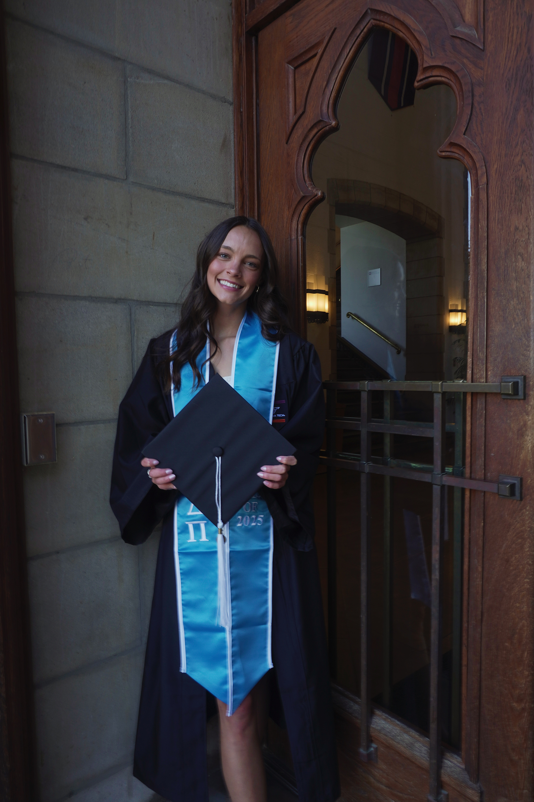

About Me
Hi! I’m Abby Gooch, the heart behind Pink House Creative. I’m passionate about helping small businesses stand out with beautiful, thoughtful marketing. As a 2025 graduate from Virginia Tech with a focus in advertising, I am passionate about creating designs that are not only aesthetically appealing, but also effective. I grew up here in The Northern Neck and am excited to work with local businesses to create brands that feel authentic and get results.
Whether you need a standout brand, stunning materials, or a simple plan to grow your presence — I’m here to help.